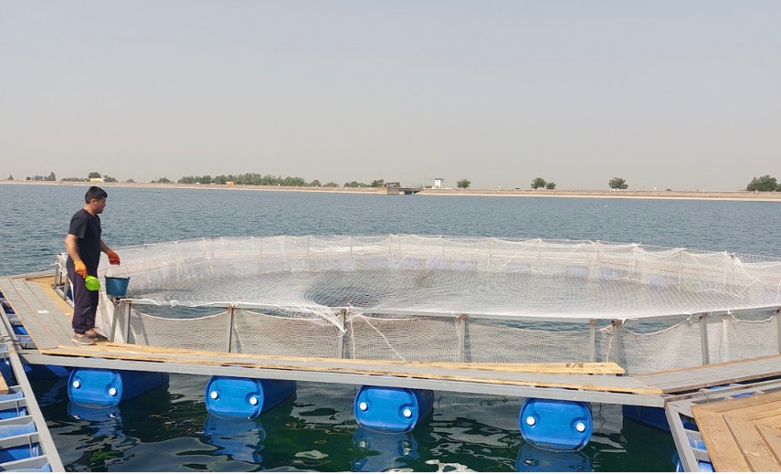

Индустриальная садковая рыбоводная ферма для тепловодной рыбы
О проекте
Проект направлен на создание инновационной устойчивой технологии садкового выращивания теплолюбивой рыбы (карпа и др.) в водохранилищах Узбекистана с высокой рыбопродуктивностью и расширением цепочки добавленной стоимости.
Организация-грантополучатель
OOO "Protect Wildlife"
Официальное название
Индустриальная садковая рыбоводная ферма для тепловодной рыбы
Код проекта
BIRD-01/23
Руководитель проекта
Собиров Жобир Жомолович
Проблема и решение
Решаемые проблемы
- Дефицит рыбы и рыбопродуктов на внутреннем рынке (потребность: 500-700 тыс. тонн в год, производство: 190 тыс. тонн)
- Недостаточное использование водоёмов для интенсивного рыбоводства
- Нехватка рабочих мест в сельской местности
- Адаптация рыбоводства к водным ресурсам в условиях засушливого климата
Цель проекта
Создание инновационной устойчивой технологии садкового выращивания теплолюбивой рыбы в водохранилищах Узбекистана с высокой рыбопродуктивностью (до 30-40 кг/м³) и расширением цепочки добавленной стоимости.
Технологическое решение
Построение фермы с плавающими садками и выращивание рыбы с продуктивностью до 30-40 кг/m³ вместо существующих 0,1-0,2 кг/m³. Выращивание рыбы за 8 месяцев до веса 1,5 кг с использованием специализированных кормов (40% белка).
Ключевые особенности:
- Плавающие садки с высокой продуктивностью (30-40 кг/m³)
- Специализированные корма с высоким содержанием белка (40%)
- Технология выращивания рыбы до товарного веса за 8 месяцев
- Создание линии по переработке рыбы в стейки и полуфабрикаты
- Прямые продажи рыбы и продуктов переработки потребителям
Текущий статус проекта
Разработаны технологии
Защищены 2 патента на производство кормов
Сформирована команда
Эксперты в аквакультуре и маркетинге
Проектирование
Проведено проектирование плавучих садков и кормового оборудования
Планы по развитию
Исследования и доработки
Разработка новых кормовых рецептур. Технологическая адаптация садков под разные типы водоёмов для расширения географии применения технологии.
Коммерциализация
- Привлечение частных инвесторов для расширения производства
- Создание полного цикла от выращивания до реализации конечному потребителю
- Приоритет - обеспечение продовольственной безопасности Узбекистана
Ожидаемые результаты
Выручка около $450,000 в год. Рентабельность: около 45%. Создание устойчивой модели аквакультуры для засушливых регионов.